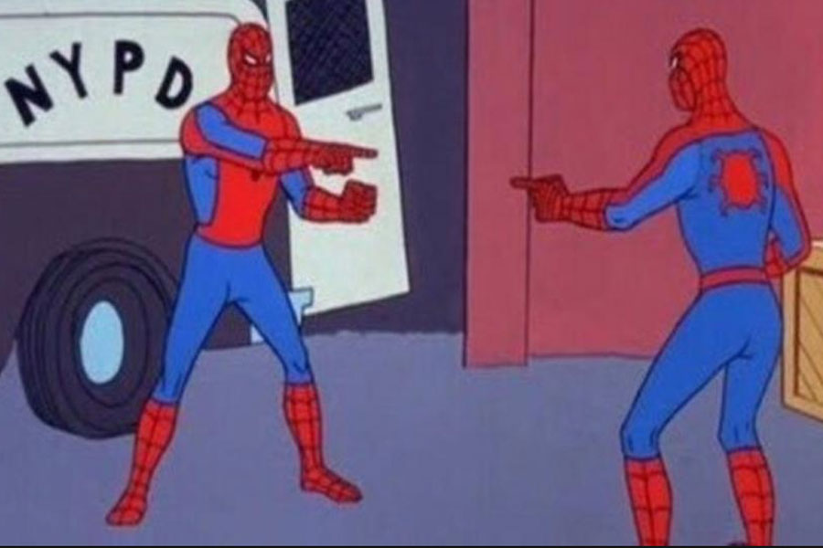
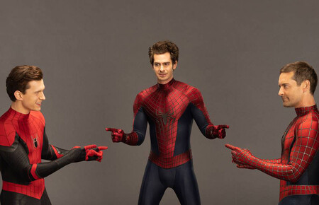

Marvel ha compartido compartió una fotografía donde podemos ver a los tres actores de'Spider-Man: No Way Home',Holland, Tobey Maguire, y Andrew Garfield recreando el famoso meme del hombre arañaquelleva siendo viral muchos meses, donde ahora son tres los superhéroes los que se están señalando, como si no se conocieran, un momento que se pudo ver,de forma más sutil en la propia película
El meme, que viene, cuya imagen proviene del episodio delos dibujos animados de Spider-Mande 1967,'doble identidad', en el que un villano intenta hacerse pasar por el héroe, se ha compartido de nuevo para anunciar la venta de compartido de nuevo para anunciar la venta de formatos domésticos y aparición en digital de la película el 22 de marzocon una imagen especial de los actores durante el rodaje, entre otros momentos detrás de las cámaras como Tobey Maguire imitando algunos pasos prohibidos de su infame baile en'Spider-Man 3'
 